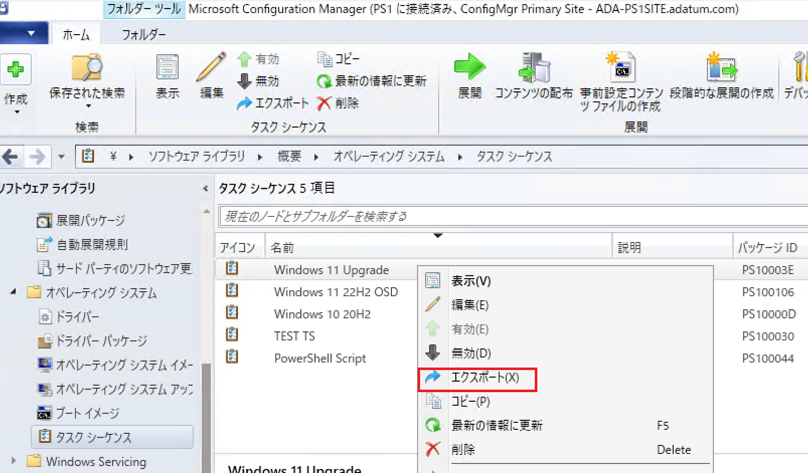
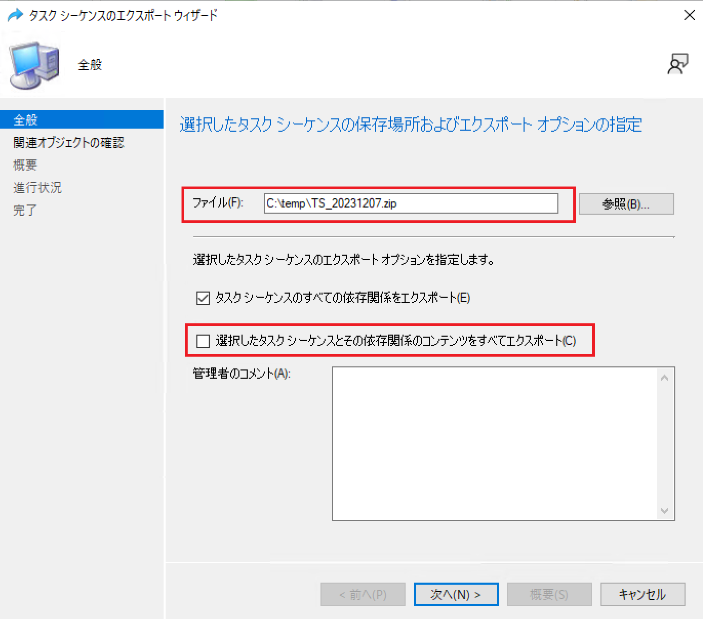
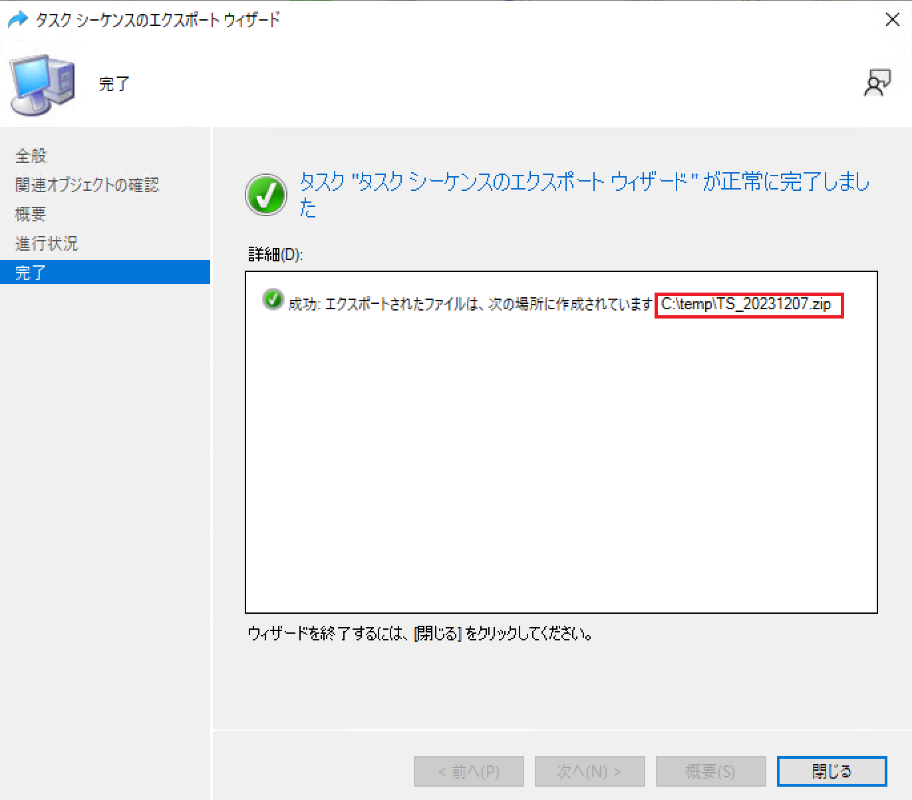
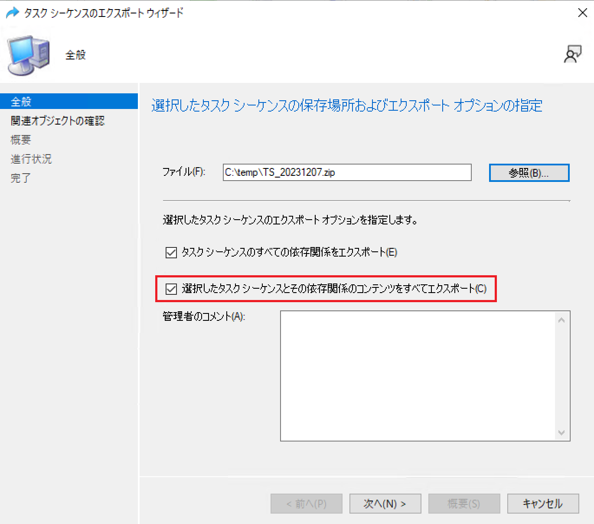

タスク シーケンスのエクスポート手順について
調査対象のタスク シーケンスとについて、下記手順でエクスポートした情報をご提供くださいますようお願いいたします。
依存関係のあるコンテンツを含む手順とするかどうかは、担当者からご案内いたします。
作業端末
Configuration Manager コンソールが動作する端末
採取頂きたい識別情報
- タスク シーケンス情報 (zip ファイル)
手順 (依存関係のあるコンテンツを含まない)
- [Configuration Manager コンソール] - [ソフトウェア ライブラリ] - [概要] - [オペレーティング システム] - [タスク シーケンス]と遷移します。
- 右ペインに表示された一覧から、対象タスク シーケンスを右クリックし、 [エクスポート] をクリックします。

- [全般] ページで、任意のファイル名を入力し [選択したタスク シーケンスとその依存関係のコンテンツをすべてエクスポート] のチェック ボックスはオフにして [次へ] をクリックします。

- [次へ] をクリックしていき、ウィザード完了後に作成されたエクスポートした zip ファイルを取得します。

手順 (依存関係のあるコンテンツを含む)
タスク シーケンスと依存関係のあるコンテンツを含んだエクスポート手順となりますので、エクスポートしたファイル サイズは大きくなることがあります。
- [Configuration Manager コンソール] - [ソフトウェア ライブラリ] - [概要] - [オペレーティング システム] - [タスク シーケンス]と遷移します。
- 右ペインに表示された一覧から、対象タスク シーケンスを右クリックし、 [エクスポート] をクリックします。
- [全般] ページで、任意のファイル名を入力し [選択したタスク シーケンスとその依存関係のコンテンツをすべてエクスポート] のチェック ボックスはオンにして [次へ] をクリックします。

- エクスポートした zip ファイルを取得します。